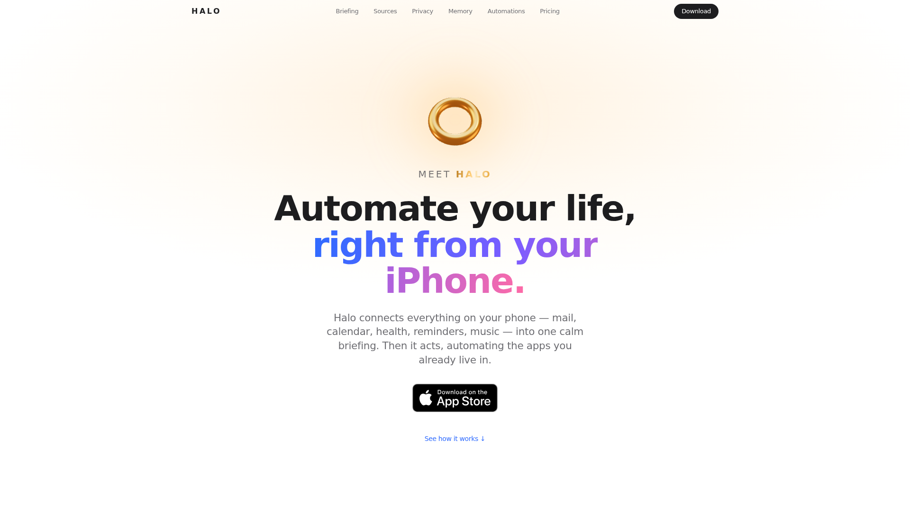
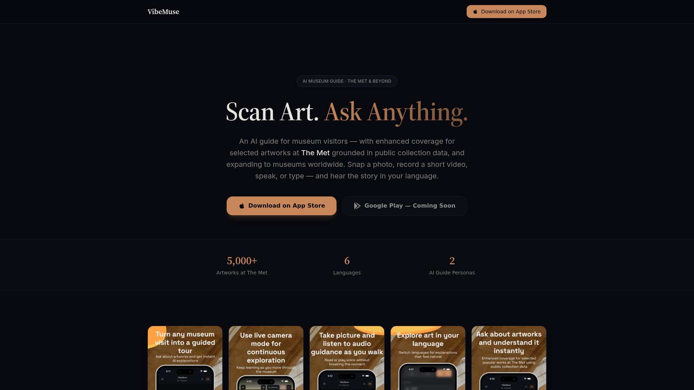
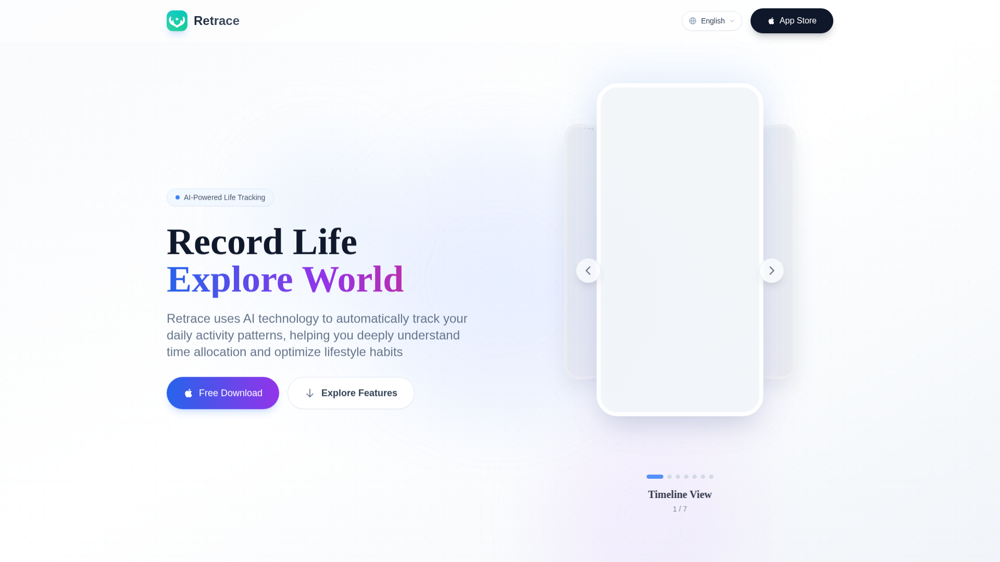

10月6日 周二

Halo - Personal AI
隐私优先的个人AI助手，完全在设备上运行，连接邮件/日历/健康等数据源

Nyore - AI文化伴侣
AI博物馆与文化导览助手，通过拍照识别艺术品并提供多语言讲解，支持组团参观和个性化行程规划

小鹿足迹 (Retrace)
自动记录日常生活足迹的iPhone应用，整合地点/路线/睡眠/运动/照片到统一时间轴
AI Zombie Video
上传照片生成AI丧尸爱情短视频，自动创作15秒带音乐的叙事视频，适配TikTok/Reels/Shorts
Cluttersignal
浏览器扩展，为邮件、链接和网站提供AI'第二意见'，本地运行检测钓鱼和欺诈内容